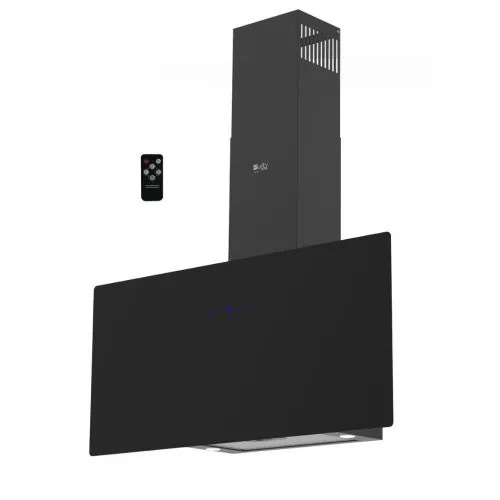

بيوريتي شفاط 90 سم 1000م3/ساعة 5 سرعات لون أسود GL-PRO-PLUS-90-BL

كاش
11,799 جنيه
السعر محدّث النهاردة · السعر في الفرع هو الأساس
تحليل سريع
أرقام محسوبة من المعروض عندنا
سعره مقارنة بالمقاس ده
رقم 18 من 29 من الأرخص للأغلى
من بين 29 منتج بنفس المقاس عندنا
السعر لكل م³ شفط
12 ج
أقل من متوسط الفئة بـ 44%
الضمان
5 سنة
ضمان الوكيل
سعره بين 29 منتج بنفس المقاس عندنا
11,799
الأرخص 6,553الأغلى 23,799
يناسب مين؟
إرشادات عامة تساعدك تقرر بنفسك
شفاط 90 سم المفروض يكون بعرض البوتاجاز أو أوسع منه شوية. قوة الشفط 1,000 م³/ساعة تكفي مطبخ لحد 83 متر مربع تقريبًا.
60 سمبوتاجاز 4 شعلة
90 سمبوتاجاز 5 شعلة أو أكبر
القاعدة التقريبية: حجم المطبخ × 12 = قوة الشفط اللي محتاجها.
مقارنة بأقرب المنتجات
أقرب ٣ منتجات من نفس النوع والمقاس عندنا
| ده PurityGL PRO PLUS 90 BL | إليكاTAMAYA-90-KLافتح › | HansSTILO ST90-1000 Blackافتح › | BOSCHDWP94CC50Tافتح › | |
|---|---|---|---|---|
| سعر الكاش | 11,799 | 11,699 | 12,359 | 11,154 |
| المقاس (سم) | 90 | 90 | 90 | 90 |
| قوة الشفط | 1,000 م³/س | — | 1,000 م³/س | 380 م³/س |
| الضمان (سنة) | 5 | 5 | — | 5 |
| السعر لكل م³ شفط | 11 | — | 12 | 29 |
✓ = الأفضل في السطر ده · دوس على اسم أي منتج تشوف صفحته
اعرف قبل ما تختار
المصطلحات اللي على الكارت، بالعربي
قوة الشفط بتتقاس إزاي؟بالمتر المكعب في الساعة (م³/ساعة). كل ما زادت، كل ما شفط الزيت والروايح أسرع، وكل ما الصوت بيعلى شوية.
هرمي ولا مائل ولا بلت إن؟الهرمي هو الشكل التقليدي وبيشفط كويس. المائل شكله مودرن وبيوفر مساحة للراس. البلت إن بينتصب جوه الدولاب.
الفلاتر بتتغير كل قد إيه؟فلتر الألومنيوم بيتغسل كل شهر تقريبًا. فلتر الفحم (لو الشفاط شغال من غير مدخنة) بيتغير كل 4 لـ 6 شهور.
أسئلة عن المنتج ده
الضمان كام؟5 أعوام ضمان الوكيل · صنع في تركيا
باختصار
المقاس 90 سمقوة الشفط: 1,000 م³/سضمان 5 أعوامبلد الصنع تركيا
متوفر قوة شفط 1000 م3/س يحتوى على فلاتر الومنيوم لحجز الدهون والأتربة يحتوى على فلاتر كربونية لتنقية الهواء ﻟﻮﺣﺔ ﺍﻟﺘﺤﻜﻢ تاتش ريموت كنترول للتحكم عن بعد إضاءة ليد ﻣﺰﻭﺩ ب 5 سرعات ﺇﻣﻜﺎﻧﻴﺔ ﺍﻟﺘﺸﻐﻴﻞ ﺑﻔﻠﺘﺮ ﻛﺮﺑﻮﻥ ﺇﻣﻜﺎﻧﻴﺔ ﺍﻟﺘﺸﻐﻴﻞ ﻃﺮﺩ ﺧﺎﺭﺟﻰ (ﻣﺪﺧﻨﺔ) ﻣﺘﻮﻓﺮ ﺑﻤﻘﺎﺱ ٩٠ سم ضمان 5 سنوات ﺻﻨﻊ ﻓﻰ ﺗﺮﻛﻴﺎ
المواصفات الكاملة
الضمان
5 أعوام
بلد الصنع
تركيا
الأبعاد
90 cm
الأسعار شاملة الضريبة · التوصيل والتركيب مجانًا داخل القاهرة
آخر تحديث للأسعار 2026-09-20
آخر تحديث للأسعار 2026-09-20